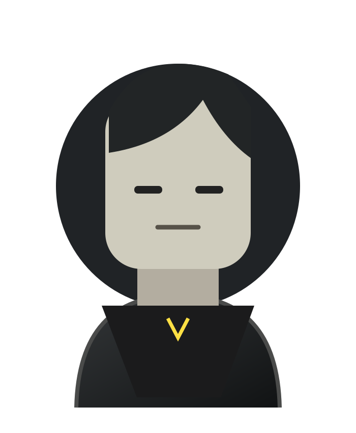

BEYOND
THE CODE.
01 / WHO I AM
Transformo ideias em mundos, interfaces e sistemas que têm identidade própria.

MY ROBLOX AVATARAUTO-SYNC ↗
LIVE
AVATAR
AVATAR
CREATIVE MODE / ACTIVE
SCROLL TO DISCOVER ↓
01 / SELECTED WORKMEUS
MEUS
PROJETOS.
DESENVOLVIMENTO. DESIGN. EXPERIÊNCIAS.
Projetos construídos com intenção, detalhe e personalidade.
NOT JUST CODE.
IT'S A VISION.
✳
JOTTA / DEVELOPER IDENTITY● LIVE AVATAR
JOTTA ®LEAD DEVELOPER & SCRIPTER
ROBLOX STUDIO / SCRIPTING / UI DESIGN
ROBLOX CREATORPORTFOLIO / 2026
02 / QUEM ESTÁ POR TRÁS
CRIANDO O QUE AINDA NÃO EXISTE.
Sou Jotta, desenvolvedor focado em experiências no Roblox, scripting, interfaces e sistemas.
ROLELEAD DEVELOPER
& SCRIPTER
& SCRIPTER
MAIN FOCUSGAME SYSTEMS
& EXPERIENCES
& EXPERIENCES
03 / TOOLKITMINHAS
MINHAS
SKILLS.
TECNOLOGIA COM IDENTIDADE.
Da lógica aos pequenos detalhes da experiência.
04 / WHAT I BUILDDO CÓDIGO
DO CÓDIGO
AO JOGO.
05 / VISUAL ARCHIVEWORK IN
WORK IN
MOTION.
Registros de sistemas, mapas e experiências.
VISUAL ARCHIVE / 00 ITEMS
EM CONSTRUÇÃO / NOVAS IMAGENS E VÍDEOS EM BREVE.
06 / COMPLETE GAME ARCHIVEMEUS JOGOS.
MEUS JOGOS.
MEUS MUNDOS.
MEUS MUNDOS NO ROBLOX.
Uma coleção que cresce a cada novo mundo criado.
MY ROBLOX WORLDS / ALWAYS GROWING01 GAME
NOVOS PROJETOS ENTRAM AQUI ASSIM QUE FOREM ADICIONADOS.
07 / NEXT PROJECT OPEN TO OPPORTUNITIES